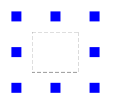
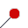
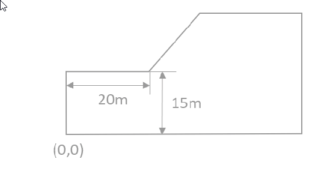
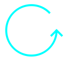
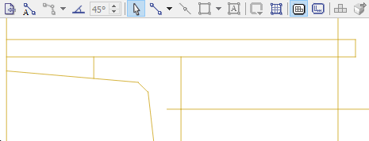

背景图像 / 几何数据
挤出集合接受两类背景图像：位图（BMP、JPG、PNG 等）和几何数据集（DXF、GEOM、STL）。两者都可用作构建挤出的参考。区别在于：位图实际上是一幅图片，而几何数据集包含与图像相关的数值信息，该数据可用于自动创建与背景几何一致的挤出器边（见 边工具（Edge Tools） 中的 由背景几何创建边）。请注意，一个挤出集合只能接受一个位图和一个几何数据集。
导入背景图像
单击工具栏上的导入按钮（ ）可将背景图像导入挤出集合。可接受的文件类型为
）可将背景图像导入挤出集合。可接受的文件类型为
- 图像文件（*.bmp *.pbm *.pgm *.png *.ppm *.xbm *.xpm）
- DXF 文件（*.dxf）
- Geom 文件（*.geom）
- STL 文件（*.stl）
打开文件后，图像将自动放置在构造视图中。
选择背景图像
要选择背景图像，请使用选择工具在其范围内任意位置双击。选中后，图像周围将显示控制柄点：

图 1：图像被选中时显示的控制柄点
也可以通过右键单击图像并选择“选择背景图像”菜单命令来选择图像。
取消选择图像
- 图像被选中后，可通过以下方式取消选择：
- 按 Esc 键；
- 在位图矩形范围之外的任意位置单击；
- 从工具栏选择其他工具；
- 右键单击所选图像并从上下文菜单中选择“退出模式”。
移动背景图像
按上述方式选择图像，然后从图像内部（而非控制柄点上）拖动。
调整背景图像大小
按上述方式选择图像，然后拖动某个控制柄点。无论使用哪个控制柄点，调整大小时始终保持长宽比。当鼠标位于控制柄点上从而可用于调整大小时，该点将以青色高亮显示。调整大小操作将以与所选控制柄点相对的点作为锚点（即固定参考点）。另见下文的“固定背景图像”。
固定背景位图图像
调整大小的参考点——固定销——可这样设置：先选中背景图像，然后右键单击它并选择“设置固定销”。这会将鼠标光标变为固定销（

），可在背景图像内任意位置单击以放置它。设置固定销时，观察状态栏中光标的位置会很有帮助。单击设置固定销后，即可将其作为锚点调整图像大小。使用固定销可作为定位和缩放位图图像流程的一部分，该图像可作为模型的参考。下面的动画图示给出了此类流程的示例。在本例中，已知左下角坐标、台阶底板宽度和高程，从而可将挤出器点定位在这些位置。随后移动并缩放图像以符合这些位置，并沿图像边缘创建挤出器边。


图 2：使用固定销时由背景位图图像构建挤出器边
请注意，取消选择图像时，固定销也会被移除。
旋转背景图像
要旋转图像，请选中它并再次双击。如下所示的旋转圆环指示该图像可以旋转。


图 3：旋转符号指示该图像可以旋转
在此模式下，按住鼠标左键抓住图像并移动鼠标即可旋转图像。旋转角（相对水平方向）也可在对象属性控件组中设置。
循环切换编辑模式
反复双击图像将在这三种状态之间循环：选中以调整大小/重新定位、选中以旋转、以及取消选择。
背景几何上的捕捉行为
使用点-边工具时，将鼠标置于几何数据集上可高亮其边并捕捉到这些边。当鼠标置于多条边汇交的顶点之上或附近时，这些边都将被高亮；单击鼠标将在该节点位置放置一个挤出器点。


图 4：将点-边工具置于几何数据集的任一顶点上，会高亮在该顶点汇交的所有背景边，并允许捕捉到该顶点。
使用点-边工具时按住 Shift 键将暂停捕捉行为。添加边时按住 Control 键，将使该边优先捕捉到角度，并在有高亮时捕捉到几何数据。
请注意，基于像素的（位图）背景图像不支持捕捉行为。
挤出中含两幅图像时的选择
一个挤出可包含一个基于像素的（位图）图像和一个基于数据的（几何）数据集。如果二者重叠，且在重叠区域内双击，则编辑状态的顺序为：
- 选中位图以调整大小/重新定位
- 选中位图以旋转
- 选中几何以调整大小/重新定位
- 选中几何以旋转
- 取消选择（移除选中状态）
| 这些内容对您有帮助吗？… | FLAC3D © 2019, Itasca | 原文更新于 2020 年 10 月 8 日 |